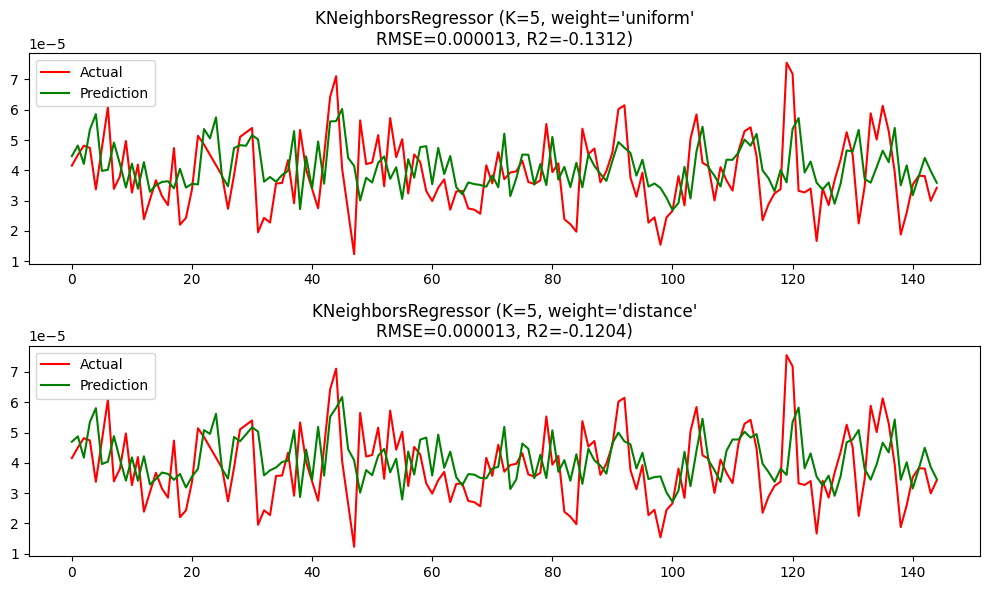

#CDSE
Mengumpulkan data#
pip install openeo
Collecting openeo
Downloading openeo-0.45.0-py3-none-any.whl.metadata (8.2 kB)
Requirement already satisfied: requests>=2.26.0 in /workspaces/PSD/.venv/lib/python3.11/site-packages (from openeo) (2.32.5)
Requirement already satisfied: urllib3>=1.9.0 in /workspaces/PSD/.venv/lib/python3.11/site-packages (from openeo) (2.5.0)
Collecting shapely>=1.6.4 (from openeo)
Downloading shapely-2.1.2-cp311-cp311-manylinux2014_x86_64.manylinux_2_17_x86_64.whl.metadata (6.8 kB)
Requirement already satisfied: numpy>=1.17.0 in /workspaces/PSD/.venv/lib/python3.11/site-packages (from openeo) (1.26.4)
Collecting xarray<2025.01.2,>=0.12.3 (from openeo)
Downloading xarray-2025.1.1-py3-none-any.whl.metadata (11 kB)
Requirement already satisfied: pandas>0.20.0 in /workspaces/PSD/.venv/lib/python3.11/site-packages (from openeo) (2.1.4)
Collecting pystac>=1.5.0 (from openeo)
Downloading pystac-1.14.1-py3-none-any.whl.metadata (4.7 kB)
Collecting deprecated>=1.2.12 (from openeo)
Downloading Deprecated-1.2.18-py2.py3-none-any.whl.metadata (5.7 kB)
Requirement already satisfied: packaging>=23.2 in /workspaces/PSD/.venv/lib/python3.11/site-packages (from xarray<2025.01.2,>=0.12.3->openeo) (25.0)
Collecting wrapt<2,>=1.10 (from deprecated>=1.2.12->openeo)
Downloading wrapt-1.17.3-cp311-cp311-manylinux1_x86_64.manylinux_2_28_x86_64.manylinux_2_5_x86_64.whl.metadata (6.4 kB)
Requirement already satisfied: python-dateutil>=2.8.2 in /workspaces/PSD/.venv/lib/python3.11/site-packages (from pandas>0.20.0->openeo) (2.9.0.post0)
Requirement already satisfied: pytz>=2020.1 in /workspaces/PSD/.venv/lib/python3.11/site-packages (from pandas>0.20.0->openeo) (2025.2)
Requirement already satisfied: tzdata>=2022.1 in /workspaces/PSD/.venv/lib/python3.11/site-packages (from pandas>0.20.0->openeo) (2025.2)
Requirement already satisfied: six>=1.5 in /workspaces/PSD/.venv/lib/python3.11/site-packages (from python-dateutil>=2.8.2->pandas>0.20.0->openeo) (1.17.0)
Requirement already satisfied: charset_normalizer<4,>=2 in /workspaces/PSD/.venv/lib/python3.11/site-packages (from requests>=2.26.0->openeo) (3.4.3)
Requirement already satisfied: idna<4,>=2.5 in /workspaces/PSD/.venv/lib/python3.11/site-packages (from requests>=2.26.0->openeo) (3.10)
Requirement already satisfied: certifi>=2017.4.17 in /workspaces/PSD/.venv/lib/python3.11/site-packages (from requests>=2.26.0->openeo) (2025.8.3)
Downloading openeo-0.45.0-py3-none-any.whl (335 kB)
Downloading xarray-2025.1.1-py3-none-any.whl (1.2 MB)
━━━━━━━━━━━━━━━━━━━━━━━━━━━━━━━━━━━━━━━━ 1.2/1.2 MB 31.0 MB/s 0:00:00
?25hDownloading Deprecated-1.2.18-py2.py3-none-any.whl (10.0 kB)
Downloading wrapt-1.17.3-cp311-cp311-manylinux1_x86_64.manylinux_2_28_x86_64.manylinux_2_5_x86_64.whl (82 kB)
Downloading pystac-1.14.1-py3-none-any.whl (207 kB)
Downloading shapely-2.1.2-cp311-cp311-manylinux2014_x86_64.manylinux_2_17_x86_64.whl (3.1 MB)
━━━━━━━━━━━━━━━━━━━━━━━━━━━━━━━━━━━━━━━━ 3.1/3.1 MB 54.7 MB/s 0:00:00
?25hInstalling collected packages: wrapt, shapely, pystac, deprecated, xarray, openeo
━━━━━━━━━━━━━━━━━━━━━━━━━━━━━━━━━━━━━━━━ 6/6 [openeo]2m5/6 [openeo]]
Successfully installed deprecated-1.2.18 openeo-0.45.0 pystac-1.14.1 shapely-2.1.2 wrapt-1.17.3 xarray-2025.1.1
[notice] A new release of pip is available: 25.2 -> 25.3
[notice] To update, run: pip install --upgrade pip
Note: you may need to restart the kernel to use updated packages.
import openeo
connection = openeo.connect("openeo.dataspace.copernicus.eu").authenticate_oidc()
# KOORDINAT BARU (SURABAYA & SIDOARJO)
aoi = {
"type": "Polygon",
"coordinates": [
[
[112.42, -7.15], # West, North
[112.42, -7.70], # West, South
[112.91, -7.70], # East, South
[112.91, -7.15], # East, North
[112.42, -7.15] # West, North (Menutup polygon)
]
],
"type": "Polygon"
}
s5p_no2 = connection.load_collection(
"SENTINEL_5P_L2",
temporal_extent=["2023-10-15", "2025-10-19"],
spatial_extent={ # BOUNDING BOX BARU
"west": 112.42,
"south": -7.70,
"east": 112.91,
"north": -7.15
},
bands=["NO2"]
)
s5p_no2_daily = s5p_no2.aggregate_temporal_period(
period="day",
reducer="mean"
)
s5p_no2_aoi = s5p_no2_daily.aggregate_spatial(
geometries=aoi,
reducer="mean"
)
# NAMA FILE DAN JUDUL BARU
job = s5p_no2.execute_batch(
title="NO2 in Surabaya Sidoarjo",
outputfile="NO2_surabaya_sidoarjo.nc" # Nama file NetCDF diubah
)
Authenticated using device code flow.
0:00:00 Job 'j-2510261752524ba7855c505d221c5017': send 'start'
0:00:13 Job 'j-2510261752524ba7855c505d221c5017': created (progress 0%)
0:00:18 Job 'j-2510261752524ba7855c505d221c5017': queued (progress 0%)
0:00:25 Job 'j-2510261752524ba7855c505d221c5017': queued (progress 0%)
0:00:33 Job 'j-2510261752524ba7855c505d221c5017': queued (progress 0%)
0:00:43 Job 'j-2510261752524ba7855c505d221c5017': queued (progress 0%)
0:00:56 Job 'j-2510261752524ba7855c505d221c5017': queued (progress 0%)
0:01:12 Job 'j-2510261752524ba7855c505d221c5017': queued (progress 0%)
0:01:31 Job 'j-2510261752524ba7855c505d221c5017': running (progress N/A)
0:01:55 Job 'j-2510261752524ba7855c505d221c5017': running (progress N/A)
0:02:26 Job 'j-2510261752524ba7855c505d221c5017': running (progress N/A)
0:03:05 Job 'j-2510261752524ba7855c505d221c5017': running (progress N/A)
0:03:54 Job 'j-2510261752524ba7855c505d221c5017': running (progress N/A)
0:04:54 Job 'j-2510261752524ba7855c505d221c5017': running (progress N/A)
0:05:57 Job 'j-2510261752524ba7855c505d221c5017': finished (progress 100%)
pip install netCDF4
Collecting netCDF4
Downloading netcdf4-1.7.3-cp311-abi3-manylinux_2_27_x86_64.manylinux_2_28_x86_64.whl.metadata (1.9 kB)
Collecting cftime (from netCDF4)
Downloading cftime-1.6.5-cp311-cp311-manylinux2014_x86_64.manylinux_2_17_x86_64.whl.metadata (8.7 kB)
Requirement already satisfied: certifi in /workspaces/PSD/.venv/lib/python3.11/site-packages (from netCDF4) (2025.8.3)
Requirement already satisfied: numpy in /workspaces/PSD/.venv/lib/python3.11/site-packages (from netCDF4) (1.26.4)
Downloading netcdf4-1.7.3-cp311-abi3-manylinux_2_27_x86_64.manylinux_2_28_x86_64.whl (9.5 MB)
━━━━━━━━━━━━━━━━━━━━━━━━━━━━━━━━━━━━━━━━ 9.5/9.5 MB 52.8 MB/s 0:00:00
?25hDownloading cftime-1.6.5-cp311-cp311-manylinux2014_x86_64.manylinux_2_17_x86_64.whl (1.7 MB)
━━━━━━━━━━━━━━━━━━━━━━━━━━━━━━━━━━━━━━━━ 1.7/1.7 MB 41.2 MB/s 0:00:00
?25hInstalling collected packages: cftime, netCDF4
━━━━━━━━━━━━━━━━━━━━━━━━━━━━━━━━━━━━━━━━ 2/2 [netCDF4]m1/2 [netCDF4]
Successfully installed cftime-1.6.5 netCDF4-1.7.3
[notice] A new release of pip is available: 25.2 -> 25.3
[notice] To update, run: pip install --upgrade pip
Note: you may need to restart the kernel to use updated packages.
import netCDF4
file_path = "NO2_surabaya_sidoarjo.nc"
ds = netCDF4.Dataset(file_path)
print("Variabel dalam file:")
print(ds.variables.keys())
no2 = ds.variables["NO2"][:]
time = ds.variables["t"][:]
try:
time_units = ds.variables["t"].units
dates = netCDF4.num2date(time, units=time_units)
except Exception:
dates = time
print("\nContoh data pertama:")
for i in range(min(10, len(no2))):
print(f"{dates[i]} | NO2: {no2[i]}")
Variabel dalam file:
dict_keys(['t', 'x', 'y', 'crs', 'NO2'])
Contoh data pertama:
2023-10-15 00:00:00 | NO2: [[4.875380182056688e-05 -- -- -- -- -- -- -- --]
[-- -- -- -- -- -- -9.936665037457715e-07 6.043653229426127e-06 --]
[5.348544436856173e-05 -- -- -- -- -- 1.730646545183845e-05
-3.4762770155793987e-06 1.2882683222414926e-05]
[5.348544436856173e-05 -- -- -- -- -- -- -3.4762770155793987e-06
8.265175893029664e-06]
[1.4184544852469116e-05 -- -- 2.6258096113451757e-05 -- --
7.085875495249638e-06 1.0900174856942613e-05 8.265175893029664e-06]
[2.1898624254390597e-05 2.4101089366013184e-05 -- 2.6258096113451757e-05
-- 1.8534243281465024e-05 1.6288235201500356e-05 1.3201321962696966e-05
1.7332935385638848e-05]
[2.1898624254390597e-05 2.7275371394352987e-05 3.0230581614887342e-05
2.749472696450539e-05 1.2457100638130214e-05 1.8534243281465024e-05
1.6288235201500356e-05 1.3201321962696966e-05 6.874643077026121e-06]
[2.886788388423156e-05 2.7275371394352987e-05 3.0230581614887342e-05
1.598859489604365e-05 2.1245066818664782e-05 1.1635302143986337e-05
-1.1763298061850946e-05 7.2903985710581765e-06 6.874643077026121e-06]
[-- 1.804497151169926e-05 -2.637886609591078e-06 1.598859489604365e-05
2.1245066818664782e-05 1.055887059919769e-05 1.733789213176351e-05
1.9659733879962005e-05 1.581258220539894e-05]
[-- -- 7.454220394720323e-06 1.4282311894930899e-05
1.4123032997304108e-05 1.055887059919769e-05 4.765973699250026e-06 --
--]
[-- -- 3.5804878280032426e-05 6.099025540606817e-06
1.285400412598392e-05 1.64639568538405e-05 7.847361302992795e-06
2.0382003640406765e-05 --]
[-- -- 2.8560796636156738e-05 2.144663994840812e-05
1.285400412598392e-05 3.1618960747437086e-06 1.3675827176484745e-05
1.7549339190736646e-06 -1.2056949572070152e-06]
[-- -- -- 9.260363185603637e-06 3.189304698025808e-05
3.1618960747437086e-06 1.3675827176484745e-05 5.797985522804083e-06
4.182272732577985e-06]
[-- -- -- 3.2455204745929223e-06 2.2405791241908446e-05
8.596407496952452e-06 1.7754053260432556e-05 5.797985522804083e-06
4.182272732577985e-06]
[-- -- -- 3.2455204745929223e-06 2.2405791241908446e-05
1.8719865693128668e-05 -3.805242386079044e-06 2.1520610971492715e-05
1.3681004929821938e-05]
[-- -- -- 2.2617332433583215e-05 2.7787389626610093e-05
1.8719865693128668e-05 8.336381142726168e-06 1.4175777323544025e-05
1.9335642718942836e-05]]
2023-10-16 00:00:00 | NO2: [[5.306573802954517e-05 7.39508614060469e-05 0.00010469058906892315
5.5545657232869416e-05 3.8675560062984005e-05 3.4505366784287617e-05
1.4439448932535015e-05 1.782915751391556e-05 2.4460623535560444e-05]
[3.7921967305010185e-05 3.713818659889512e-05 3.786994784604758e-05
5.5545657232869416e-05 3.204266613465734e-05 1.4268197446654085e-05
1.783865809557028e-05 1.782915751391556e-05 1.3428578313323669e-05]
[3.7921967305010185e-05 3.4063661587424576e-05 3.2951960747595876e-05
3.922757969121449e-05 3.204266613465734e-05 2.784814205369912e-05
3.156157390549197e-06 2.080040576402098e-05 1.3428578313323669e-05]
[4.83001240354497e-05 3.4063661587424576e-05 3.2951960747595876e-05
3.527972876327112e-05 2.5477836970821954e-05 2.784814205369912e-05
3.156157390549197e-06 1.669925950409379e-05 1.271335258934414e-05]
[3.9778155041858554e-05 3.49684851244092e-05 2.3730515749775805e-05
3.527972876327112e-05 3.7533700378844514e-05 3.3540938602527604e-05
1.6594065527897328e-05 1.669925950409379e-05 1.8707023627939634e-05]
[3.9778155041858554e-05 3.1570591090712696e-05 3.902200478478335e-05
5.210160088608973e-05 3.7766818422824144e-05 2.9253089451231062e-05
3.051878957194276e-05 1.2334917300904635e-05 1.8707023627939634e-05]
[4.538867869996466e-05 5.630478335660882e-05 3.902200478478335e-05
2.5918874598573893e-05 1.8224796804133803e-05 2.9253089451231062e-05
2.9100705432938412e-05 1.842837082222104e-05 2.814280378515832e-05]
[4.056757461512461e-05 3.367551107658073e-05 4.6387751353904605e-05
3.780657425522804e-05 1.222949504153803e-05 2.226855758635793e-05
2.3912622054922394e-05 1.842837082222104e-05 3.600692798499949e-05]
[4.6101944462861866e-05 4.161688411841169e-05 3.74710070900619e-05
2.8576369004440494e-05 1.222949504153803e-05 3.1103645596886054e-05
2.1581488908850588e-05 1.5759953384986147e-05 3.600692798499949e-05]
[2.2257956516114064e-05 4.161688411841169e-05 2.0932233383064158e-05
1.7516431398689747e-05 1.4957875464460813e-05 3.1103645596886054e-05
2.1581488908850588e-05 2.1965321138850413e-05 3.0302269806270488e-05]
[2.58896379818907e-05 2.6600584533298388e-05 1.0316933185094967e-05
1.7516431398689747e-05 2.5631738026277162e-05 2.881239379348699e-05
2.719483381952159e-05 2.1965321138850413e-05 1.612999039934948e-05]
[2.58896379818907e-05 2.596798731246963e-05 1.9407589206821285e-06
1.6328760466421954e-05 2.5631738026277162e-05 3.485830529825762e-05
4.0535222069593146e-05 3.183860098943114e-05 1.612999039934948e-05]
[3.778682730626315e-05 2.596798731246963e-05 1.9407589206821285e-06
5.911604603170417e-06 5.4933756473474205e-05 4.294067184673622e-05
4.0535222069593146e-05 2.4077342459349893e-05 4.2568539356580004e-05]
[2.5163519239868037e-05 3.0089417123235762e-05 3.72056856576819e-05
5.911604603170417e-06 4.2235322325723246e-05 2.625380329845939e-05
2.9582888600998558e-05 2.8167043637949973e-05 1.990017517528031e-05]
[2.5163519239868037e-05 4.654947406379506e-05 3.129589094896801e-05
3.03155120491283e-05 4.6770903281867504e-05 3.26532062899787e-05
3.167811155435629e-05 3.8048568967496976e-05 1.990017517528031e-05]
[5.505816443474032e-05 3.0436462111538276e-05 3.129589094896801e-05
1.4313191059045494e-05 4.625539077096619e-05 3.26532062899787e-05
3.2381427445216104e-05 3.928953083232045e-05 4.558088039630093e-05]]
2023-10-17 00:00:00 | NO2: [[0.00011310211993986741 5.762632645200938e-05 7.847078086342663e-05
0.00010477981413714588 4.905709647573531e-05 3.729201853275299e-05
3.136566010653041e-05 2.847748328349553e-05 3.294542693765834e-05]
[4.2370920709799975e-05 5.762632645200938e-05 3.738168015843257e-05
4.356680074124597e-05 4.905709647573531e-05 1.9282959328847937e-05
1.865159356384538e-05 2.847748328349553e-05 2.5558623747201636e-05]
[3.353572537889704e-05 2.995399154315237e-05 3.738168015843257e-05
4.301874287193641e-05 4.516106491792016e-05 1.9282959328847937e-05
1.769260416040197e-05 2.2537758923135698e-05 2.5558623747201636e-05]
[3.353572537889704e-05 3.881899465341121e-05 3.2705935154808685e-05
4.301874287193641e-05 2.0622150259441696e-05 2.5267225282732397e-05
1.769260416040197e-05 2.7871248676092364e-05 2.2792022718931548e-05]
[3.0124383556540124e-05 3.881899465341121e-05 3.526779619278386e-05
3.4666572901187465e-05 2.0622150259441696e-05 2.7330910597811453e-05
2.8204252885188907e-05 2.7871248676092364e-05 2.6013525712187402e-05]
[4.406476364238188e-05 4.2823910916922614e-05 3.526779619278386e-05
3.867259147227742e-05 3.809884219663218e-05 2.7330910597811453e-05
1.9034665456274524e-05 3.914341505151242e-05 2.6013525712187402e-05]
[4.406476364238188e-05 4.0371392969973385e-05 5.028930536354892e-05
3.867259147227742e-05 3.8811369449831545e-05 2.923816464317497e-05
1.9034665456274524e-05 3.333458153065294e-05 1.7527716408949345e-05]
[3.481169915175997e-05 5.3050825954414904e-05 2.5508805265417323e-05
4.311793600209057e-05 5.0016438763123006e-05 1.8090024241246283e-05
2.729670814005658e-05 2.2144929971545935e-05 1.7846317859948613e-05]
[4.5088640035828575e-05 4.2403280531289056e-05 2.5508805265417323e-05
3.922147516277619e-05 2.4255376047221944e-05 1.8090024241246283e-05
1.9072062059422024e-05 1.160972624347778e-05 1.7846317859948613e-05]
[4.5088640035828575e-05 5.2951589168515056e-05 4.134471600991674e-05
3.922147516277619e-05 3.061065945075825e-05 2.1650335838785395e-05
1.9072062059422024e-05 1.7835869584814645e-05 2.374065479671117e-05]
[2.114099515893031e-05 5.2951589168515056e-05 3.0820363463135436e-05
3.0693823646288365e-05 3.061065945075825e-05 2.015279278566595e-05
3.2170788472285494e-05 1.7835869584814645e-05 2.132245572283864e-05]
[3.159324114676565e-05 4.170156171312556e-05 3.0820363463135436e-05
1.8818860553437844e-05 3.799682599492371e-05 2.015279278566595e-05
1.970339144463651e-05 1.9928618712583557e-05 2.132245572283864e-05]
[3.159324114676565e-05 2.90158513962524e-05 3.416205072426237e-05
1.8818860553437844e-05 3.946695142076351e-05 2.155180300178472e-05
1.970339144463651e-05 3.0113395041553304e-05 1.6924916053540073e-05]
[3.58902761945501e-05 2.90158513962524e-05 1.6821570170577615e-05
4.17254886997398e-05 3.946695142076351e-05 2.2199839804670773e-05
3.263022881583311e-05 3.0113395041553304e-05 2.409890657872893e-05]
[3.492218820611015e-05 2.3333881472353823e-05 2.3333881472353823e-05
1.7575086530996487e-05 3.431218283367343e-05 4.063955930178054e-05
3.0266939575085416e-05 2.012470031331759e-05 3.156927050440572e-05]
[4.899272244074382e-05 2.7088468414149247e-05 2.6881973099079914e-05
1.7575086530996487e-05 1.8982998881256208e-05 5.590259388554841e-05
3.0266939575085416e-05 4.759721559821628e-05 4.60427108919248e-05]]
2023-10-18 00:00:00 | NO2: [[0.00012589155812747777 0.00012589155812747777 0.00012589155812747777
6.807051977375522e-05 6.807051977375522e-05 3.40509504894726e-05
3.40509504894726e-05 2.684438914002385e-05 1.8548556909081526e-05]
[8.183016325347126e-05 7.66954617574811e-05 7.66954617574811e-05
6.807051977375522e-05 5.131375655764714e-05 3.40509504894726e-05
2.9592747523565777e-05 1.8548556909081526e-05 1.8548556909081526e-05]
[5.098579640616663e-05 7.66954617574811e-05 4.526770499069244e-05
5.131375655764714e-05 3.5096218198304996e-05 2.9592747523565777e-05
2.9592747523565777e-05 2.019838211708702e-05 2.019838211708702e-05]
[4.906348112854175e-05 4.526770499069244e-05 4.526770499069244e-05
3.5096218198304996e-05 3.5096218198304996e-05 3.327925514895469e-05
3.327925514895469e-05 2.019838211708702e-05 1.8411043129162863e-05]
[4.906348112854175e-05 3.385075251571834e-05 3.385075251571834e-05
3.5096218198304996e-05 3.1232048058882356e-05 3.327925514895469e-05
1.1452058060967829e-05 1.8411043129162863e-05 1.8411043129162863e-05]
[4.436955350684002e-05 3.385075251571834e-05 5.461280306917615e-05
3.1232048058882356e-05 3.096196451224387e-05 1.1452058060967829e-05
1.1452058060967829e-05 1.710433207335882e-05 1.710433207335882e-05]
[5.7145487517118454e-05 5.461280306917615e-05 5.461280306917615e-05
3.096196451224387e-05 3.096196451224387e-05 1.2931145647598896e-05
1.2931145647598896e-05 1.2931145647598896e-05 2.1043126253061928e-05]
[5.7145487517118454e-05 4.4880478526465595e-05 4.4880478526465595e-05
3.096196451224387e-05 2.6025367333204485e-05 2.6025367333204485e-05
2.3831215003156103e-05 2.3831215003156103e-05 2.1043126253061928e-05]
[3.975005165557377e-05 4.4880478526465595e-05 4.221182825858705e-05
4.221182825858705e-05 2.6025367333204485e-05 2.803518873406574e-05
2.3831215003156103e-05 2.103955739585217e-05 2.3933886041049846e-05]
[3.2962732802843675e-05 3.2962732802843675e-05 4.221182825858705e-05
2.8357681003399193e-05 2.803518873406574e-05 2.2997144697001204e-05
2.103955739585217e-05 2.103955739585217e-05 2.605200461403001e-05]
[3.2962732802843675e-05 2.7209936888539232e-05 2.8357681003399193e-05
2.8357681003399193e-05 2.2997144697001204e-05 2.2997144697001204e-05
2.75891743513057e-05 2.75891743513057e-05 2.605200461403001e-05]
[2.7209936888539232e-05 2.7209936888539232e-05 2.564815258665476e-05
2.564815258665476e-05 2.2997144697001204e-05 3.642853698693216e-05
2.75891743513057e-05 3.218579149688594e-05 2.7403251806390472e-05]
[3.219644713681191e-05 3.219644713681191e-05 2.564815258665476e-05
3.291366738267243e-05 3.642853698693216e-05 3.652518353192136e-05
3.218579149688594e-05 3.218579149688594e-05 1.5748846635688096e-05]
[3.219644713681191e-05 3.265369377913885e-05 3.291366738267243e-05
3.291366738267243e-05 3.652518353192136e-05 3.652518353192136e-05
2.4234153897850774e-05 2.4234153897850774e-05 1.5748846635688096e-05]
[3.265369377913885e-05 3.265369377913885e-05 2.643264815560542e-05
2.643264815560542e-05 3.652518353192136e-05 3.148109317407943e-05
3.148109317407943e-05 2.5782916054595262e-05 2.5782916054595262e-05]
[6.729361484758556e-05 6.729361484758556e-05 2.643264815560542e-05
1.8413316865917295e-05 1.8413316865917295e-05 2.8893648050143383e-05
2.8893648050143383e-05 2.5782916054595262e-05 4.43654389528092e-05]]
2023-10-19 00:00:00 | NO2: [[8.56750484672375e-05 7.943721720948815e-05 7.943721720948815e-05
6.826219032518566e-05 6.826219032518566e-05 3.145786467939615e-05
3.145786467939615e-05 3.145786467939615e-05 2.1970396119286306e-05]
[9.050544758792967e-05 9.976357978302985e-05 9.976357978302985e-05
7.401093898806721e-05 7.401093898806721e-05 7.401093898806721e-05
3.145786467939615e-05 3.263062899350189e-05 2.6726156647782773e-05]
[9.050544758792967e-05 6.653660238953307e-05 6.653660238953307e-05
6.653660238953307e-05 5.088455509394407e-05 5.088455509394407e-05
3.263062899350189e-05 3.263062899350189e-05 2.6726156647782773e-05]
[4.21042313973885e-05 6.653660238953307e-05 6.653660238953307e-05
6.653660238953307e-05 3.136557279503904e-05 3.136557279503904e-05
1.8701071894611232e-05 1.8701071894611232e-05 9.806733032746706e-06]
[2.7159409000887536e-05 2.7159409000887536e-05 2.9226219339761883e-05
2.9226219339761883e-05 3.136557279503904e-05 3.136557279503904e-05
1.3150922313798219e-05 1.3150922313798219e-05 1.1271539733570535e-05]
[3.11478361254558e-05 3.11478361254558e-05 3.646096229203977e-05
3.646096229203977e-05 3.59757941623684e-05 3.59757941623684e-05
1.3150922313798219e-05 1.3150922313798219e-05 1.3150922313798219e-05]
[3.11478361254558e-05 3.11478361254558e-05 3.646096229203977e-05
3.0599494493799284e-05 2.2648418962489814e-05 2.2648418962489814e-05
3.126012234133668e-05 3.126012234133668e-05 3.126012234133668e-05]
[3.379759436938912e-05 3.379759436938912e-05 3.0599494493799284e-05
3.0599494493799284e-05 2.2648418962489814e-05 2.2648418962489814e-05
2.3441760276909918e-05 2.087349639623426e-05 2.087349639623426e-05]
[2.9646953407791443e-05 2.9646953407791443e-05 2.4064958779490553e-05
2.4064958779490553e-05 2.4064958779490553e-05 2.3441760276909918e-05
2.3441760276909918e-05 2.087349639623426e-05 3.341081537655555e-05]
[2.9646953407791443e-05 2.9646953407791443e-05 3.5100511013297364e-05
3.5100511013297364e-05 3.5100511013297364e-05 3.0671169952256605e-05
3.0671169952256605e-05 3.341081537655555e-05 3.341081537655555e-05]
[4.42702294094488e-05 4.42702294094488e-05 4.42702294094488e-05
3.5100511013297364e-05 3.5100511013297364e-05 2.613272226881236e-05
2.613272226881236e-05 3.248468055971898e-05 3.248468055971898e-05]
[3.5176028177374974e-05 3.640133945737034e-05 3.640133945737034e-05
4.0388968045590445e-05 4.0388968045590445e-05 2.613272226881236e-05
2.613272226881236e-05 2.059454891423229e-05 2.059454891423229e-05]
[3.5176028177374974e-05 3.648619895102456e-05 3.648619895102456e-05
3.008090061484836e-05 3.008090061484836e-05 2.1752353859483264e-05
2.1752353859483264e-05 2.059454891423229e-05 2.059454891423229e-05]
[2.840586967067793e-05 3.648619895102456e-05 3.648619895102456e-05
3.008090061484836e-05 -- 4.7422119678230956e-05 4.7422119678230956e-05
4.7422119678230956e-05 4.313860699767247e-05]
[2.415566996205598e-05 4.151566463406198e-05 4.151566463406198e-05 -- --
4.7422119678230956e-05 4.7422119678230956e-05 1.8109845768776722e-05 --]
[2.415566996205598e-05 3.6469344195211306e-05 3.6469344195211306e-05
2.6973353669745848e-05 2.6973353669745848e-05 2.6973353669745848e-05
1.8109845768776722e-05 1.8109845768776722e-05 --]]
2023-10-20 00:00:00 | NO2: [[0.00012407616304699332 8.976359094958752e-05 6.422381557058543e-05
0.0001569143496453762 5.883302947040647e-05 2.4779072191449814e-05
2.4779072191449814e-05 2.239420427940786e-05 1.9167253412888385e-05]
[0.00011002354585798457 0.00013618414232041687 0.00016554851026739925
0.00016554851026739925 0.0001569143496453762 6.579227920155972e-05
3.965594441979192e-05 1.8831260604201816e-05 3.26911685988307e-05]
[4.36415066360496e-05 6.803050200687721e-05 0.00011132853251183406
0.00014293560525402427 0.0001211001435876824 6.579227920155972e-05
3.965594441979192e-05 1.8746899513644166e-05 6.084655524318805e-06]
[4.36415066360496e-05 6.803050200687721e-05 5.639570372295566e-05
7.307990017579868e-05 7.778600411256775e-05 4.8962043365463614e-05
2.252745434816461e-05 1.8746899513644166e-05 6.084655524318805e-06]
[5.0893471780000255e-05 5.221057654125616e-05 5.639570372295566e-05
7.307990017579868e-05 7.778600411256775e-05 3.934458800358698e-05
3.1842351745581254e-05 2.2401727619580925e-05 1.3776253581454512e-05]
[5.04667914356105e-05 7.073855522321537e-05 7.037632167339325e-05
6.0431277233874425e-05 3.3569958759471774e-05 3.934458800358698e-05
3.1842351745581254e-05 1.7669239241513424e-05 2.627296998980455e-05]
[5.04667914356105e-05 7.073855522321537e-05 5.413860344560817e-05
5.267200685921125e-05 4.396939402795397e-05 3.522179031278938e-05
2.2941820134292357e-05 1.7669239241513424e-05 1.7669239241513424e-05]
[4.759392322739586e-05 4.3296149669913575e-05 5.413860344560817e-05
5.267200685921125e-05 3.287235085736029e-05 2.575083817646373e-05
2.575083817646373e-05 2.0212906747474335e-05 2.7325488190399483e-05]
[2.6790385163621977e-05 3.4942233469337225e-05 4.38940514868591e-05
4.38940514868591e-05 4.659155456465669e-05 3.287235085736029e-05
2.575083817646373e-05 1.851345041359309e-05 8.26980613055639e-06]
[4.2341285734437406e-05 2.6790385163621977e-05 3.472441676422022e-05
2.490491715434473e-05 3.904844561475329e-05 2.3244205294759013e-05
1.4402370652533136e-05 1.851345041359309e-05 8.26980613055639e-06]
[3.447231210884638e-05 3.6165478377370164e-05 3.472441676422022e-05
2.490491715434473e-05 3.538070814101957e-05 2.3824773961678147e-05
1.2195705494377762e-05 1.4807878869760316e-05 1.916845576488413e-05]
[3.9433754864148796e-05 3.625664976425469e-05 2.9126884328434244e-05
3.9057820686139166e-05 3.538070814101957e-05 2.3824773961678147e-05
1.8438633560435846e-05 2.8288501198403537e-05 2.1246311007416807e-05]
[3.9433754864148796e-05 2.4537986973882653e-05 3.3856453228509054e-05
2.7839383619721048e-05 3.678912253235467e-05 2.5822244424489327e-05
1.8438633560435846e-05 2.8288501198403537e-05 2.4123544790199958e-05]
[3.267058855271898e-05 2.4537986973882653e-05 3.3856453228509054e-05
2.245286486868281e-05 2.1401714548119344e-05 1.9901315681636333e-05
3.608529004850425e-05 2.9632421501446515e-05 2.9632421501446515e-05]
[3.0043362130527385e-05 1.3287683032103814e-05 3.087276854785159e-05
2.245286486868281e-05 2.1401714548119344e-05 2.1401714548119344e-05
1.710133619781118e-05 1.9989751308457926e-05 1.9287650502519682e-05]
[3.0043362130527385e-05 4.015032391180284e-05 3.685066258185543e-05
1.740069274092093e-05 2.512508217478171e-05 2.398616743448656e-05
1.710133619781118e-05 1.9989751308457926e-05 2.625670276756864e-05]]
2023-10-21 00:00:00 | NO2: [[9.260921797249466e-05 0.00016990688163787127 0.00020772506832145154
0.00021946601918898523 6.752633635187522e-05 4.6758705138927326e-05
2.8462907721404918e-05 2.929382026195526e-05 2.7565580239752308e-05]
[7.877143798395991e-05 0.00016990688163787127 9.921535820467398e-05
0.00016813083493616432 5.709709512302652e-05 4.369084854261018e-05
2.8462907721404918e-05 2.0899617084069178e-05 1.0170446330448613e-05]
[8.617821004008874e-05 7.941202784422785e-05 9.921535820467398e-05
0.00016813083493616432 7.927415572339669e-05 6.461955490522087e-05
3.390342681086622e-05 2.0899617084069178e-05 1.0170446330448613e-05]
[8.617821004008874e-05 8.913352939998731e-05 8.964815060608089e-05
8.639870793558657e-05 7.927415572339669e-05 6.461955490522087e-05
4.18752824771218e-05 2.5079290935536847e-05 2.47601874434622e-05]
[-- 8.913352939998731e-05 7.969939906615764e-05 8.186267950804904e-05
7.4687362939585e-05 5.208928996580653e-05 4.18752824771218e-05
3.0339382647071034e-05 2.9985811124788597e-05]
[0.00010294211097061634 0.00010233358625555411 9.836022218223661e-05
8.186267950804904e-05 6.0456644860096276e-05 4.032175274915062e-05
3.60169869964011e-05 2.958446384582203e-05 2.9985811124788597e-05]
[0.00010294211097061634 8.581793372286484e-05 7.961608935147524e-05
8.464630082016811e-05 8.231169340433553e-05 3.619979179347865e-05
4.004880611319095e-05 3.4250522730872035e-05 2.527644028305076e-05]
[8.354426972800866e-05 8.030894241528586e-05 4.997578798793256e-05
5.532569048227742e-05 4.7940720833139494e-05 3.619979179347865e-05
3.9312242734013125e-05 1.7763572031981312e-05 2.088370092678815e-05]
[9.068250801647082e-05 5.86624737479724e-05 4.997578798793256e-05
4.742990495287813e-05 3.3778444048948586e-05 2.946641507151071e-05
2.7337915526004508e-05 1.7763572031981312e-05 2.3633861928828992e-05]
[0.00010523769742576405 4.2631258111214265e-05 4.7271976654883474e-05
2.050656985375099e-05 3.3778444048948586e-05 1.3330250112630893e-05
1.5698920833528973e-05 1.341451297776075e-05 2.3633861928828992e-05]
[7.771039963699877e-05 4.2631258111214265e-05 4.285718023311347e-05
3.3712098229443654e-05 2.6964402422891e-05 1.3330250112630893e-05
1.5698920833528973e-05 2.222303555754479e-05 2.8449574529076926e-05]
[5.682783739757724e-05 5.8196957979816943e-05 4.285718023311347e-05
3.3712098229443654e-05 3.82430043828208e-05 2.555928767833393e-05
1.6986039554467425e-05 2.222303555754479e-05 2.065037733700592e-05]
[5.682783739757724e-05 6.457173003582284e-05 3.6648572859121487e-05
2.8901460609631613e-05 3.82430043828208e-05 4.2201372707495466e-05
4.098877980140969e-05 1.3051063433522359e-05 1.5191981219686568e-05]
[7.545575499534607e-05 6.457173003582284e-05 4.285480099497363e-05
3.071128958254121e-05 4.5409895392367616e-05 4.655761586036533e-05
4.098877980140969e-05 2.725482772802934e-05 1.8203108993475325e-05]
[-- 4.978627839591354e-05 5.1041439292021096e-05 3.071128958254121e-05
4.9985803343588486e-05 2.6755271392175928e-05 3.8293994293781e-05
2.2115289539215155e-05 2.9637209081556648e-05]
[-- 5.9291232901159674e-05 -- 7.898736657807603e-05
6.146477244328707e-05 3.8447997212642804e-05 3.778886093641631e-05
3.646391996880993e-05 2.9637209081556648e-05]]
2023-10-22 00:00:00 | NO2: [[5.956733366474509e-05 9.550633694743738e-05 0.00017691553512122482
0.00021748946164734662 7.501929212594405e-05 3.5551223845686764e-05
3.150957127218135e-05 3.281809767941013e-05 1.4736523553438019e-05]
[4.863604772253893e-05 6.845341704320163e-05 6.262253737077117e-05
7.057781476760283e-05 7.501929212594405e-05 4.67596146336291e-05
2.605831832624972e-05 2.3434064132743515e-05 1.4736523553438019e-05]
[5.4219868616200984e-05 4.0419290598947555e-05 6.262253737077117e-05
6.356724043143913e-05 4.941141014569439e-05 4.2827399738598615e-05
2.605831832624972e-05 1.9800707377726212e-05 1.7962665879167616e-05]
[5.4219868616200984e-05 5.213755139266141e-05 3.893736720783636e-05
6.356724043143913e-05 6.162575300550088e-05 4.7797042498132214e-05
3.920511153410189e-05 1.9800707377726212e-05 2.415902963548433e-05]
[6.197650509420782e-05 5.213755139266141e-05 8.376448386115953e-05
6.345284782582894e-05 6.162575300550088e-05 4.7797042498132214e-05
3.179945269948803e-05 1.7287446098634973e-05 2.415902963548433e-05]
[8.163732854882255e-05 7.315709081012756e-05 8.376448386115953e-05
8.229084778577089e-05 4.874824662692845e-05 4.990580782759935e-05
3.179945269948803e-05 3.0241109925555065e-05 2.605056761240121e-05]
[6.468640640377998e-05 7.280937279574573e-05 6.667798152193427e-05
8.229084778577089e-05 7.020250632194802e-05 3.5404442314757034e-05
3.0673360015498474e-05 3.0241109925555065e-05 2.7626774681266397e-05]
[6.842993025202304e-05 6.294210470514372e-05 4.589818854583427e-05
3.494156044325791e-05 5.267759843263775e-05 2.816283085849136e-05
3.350750921526924e-05 2.0250441593816504e-05 2.7626774681266397e-05]
[6.347963790176436e-05 4.563101538224146e-05 4.589818854583427e-05
3.494156044325791e-05 4.664903462980874e-05 2.0888002836727537e-05
2.9638473279192112e-05 2.4982044124044478e-05 2.6240264560328797e-05]
[6.347963790176436e-05 4.166491635260172e-05 4.123365943087265e-05
3.794515214394778e-05 4.664903462980874e-05 2.871978904295247e-05
2.237487024103757e-05 2.4982044124044478e-05 --]
[4.259740671841428e-05 4.166491635260172e-05 3.479825682006776e-05
4.989530498278327e-05 3.2234245736617595e-05 2.871978904295247e-05
2.3195621906779706e-05 1.6464518921566196e-05 --]
[6.306670547928661e-05 3.603476579883136e-05 3.479825682006776e-05
4.989530498278327e-05 4.211841951473616e-05 2.7077498089056462e-05
2.3195621906779706e-05 3.4662782127270475e-05 1.8937240383820608e-05]
[-- -- 4.988673754269257e-05 3.732496770680882e-05 4.211841951473616e-05
2.610329283925239e-05 3.261148594901897e-05 3.4662782127270475e-05
3.184605157002807e-05]
[-- -- 4.988673754269257e-05 2.6196212274953723e-05
2.997404408233706e-05 4.685521707870066e-05 3.4491611586418e-05
2.540079913160298e-05 3.184605157002807e-05]
[-- -- -- 2.6196212274953723e-05 2.8677994123427197e-05
4.27638842666056e-05 3.5115870559820905e-05 3.27392881445121e-05
3.721242319443263e-05]
[-- -- -- 3.394903615117073e-05 2.8677994123427197e-05
4.316818012739532e-05 2.1803367417305708e-05 3.27392881445121e-05
3.015153924934566e-05]]
2023-10-23 00:00:00 | NO2: [[0.00017645262414589524 0.0001459685736335814 0.00013609815505333245
0.00013609815505333245 -- -- -- -- --]
[0.0001459685736335814 0.0001459685736335814 0.00010527179256314412
0.00010527179256314412 -- 2.43315334955696e-05 2.43315334955696e-05 --
--]
[7.127637218218297e-05 7.127637218218297e-05 0.00010527179256314412
5.944931035628542e-05 5.244931162451394e-05 2.43315334955696e-05
2.817648055497557e-05 2.2963127776165493e-05 2.2963127776165493e-05]
[4.57088062830735e-05 5.771731957793236e-05 5.944931035628542e-05
5.944931035628542e-05 4.811691542272456e-05 4.811691542272456e-05
2.817648055497557e-05 1.3716831745114177e-05 1.3716831745114177e-05]
[4.763977995025925e-05 5.771731957793236e-05 6.835454405518249e-05
6.835454405518249e-05 4.811691542272456e-05 4.956845805281773e-05
2.6038424039143138e-05 1.3716831745114177e-05 2.1093881514389068e-05]
[6.15730241406709e-05 6.206882244441658e-05 6.206882244441658e-05
7.413942512357607e-05 4.956845805281773e-05 4.956845805281773e-05
1.40405400088639e-05 2.1093881514389068e-05 2.1093881514389068e-05]
[6.15730241406709e-05 7.000437472015619e-05 7.000437472015619e-05
7.413942512357607e-05 3.842923615593463e-05 3.842923615593463e-05
1.40405400088639e-05 2.5632605684222654e-05 1.6919762856559828e-05]
[6.866228795843199e-05 7.000437472015619e-05 3.828284752671607e-05
5.57487401238177e-05 3.842923615593463e-05 3.3874814107548445e-05
2.5632605684222654e-05 2.5632605684222654e-05 2.407221109024249e-05]
[4.8992991651175544e-05 3.828284752671607e-05 3.828284752671607e-05
3.701358218677342e-05 3.701358218677342e-05 3.3874814107548445e-05
2.1697125703212805e-05 2.1697125703212805e-05 2.407221109024249e-05]
[4.8992991651175544e-05 3.8495043554576114e-05 3.8495043554576114e-05
3.701358218677342e-05 4.324171459302306e-05 3.6176872526993975e-05
2.1697125703212805e-05 2.2750182324671187e-05 2.10578855330823e-05]
[5.765354217146523e-05 3.8495043554576114e-05 4.2013925849460065e-05
4.324171459302306e-05 4.324171459302306e-05 2.5882111003738828e-05
2.2750182324671187e-05 2.2750182324671187e-05 2.3532542400062084e-05]
[5.2957420848542824e-05 5.2957420848542824e-05 4.2013925849460065e-05
4.1225972381653264e-05 4.1225972381653264e-05 2.5882111003738828e-05
3.2682830351404846e-05 2.263570604554843e-05 2.3532542400062084e-05]
[5.2957420848542824e-05 -- 3.995837687398307e-05 4.1225972381653264e-05
4.244147567078471e-05 3.2682830351404846e-05 3.2682830351404846e-05
2.5992156224674545e-05 3.104883944615722e-05]
[-- -- 4.363493644632399e-05 4.363493644632399e-05 4.244147567078471e-05
3.8312286051223055e-05 3.8312286051223055e-05 2.5992156224674545e-05
2.9382857974269427e-05]
[-- -- 4.363493644632399e-05 -- 4.1117004002444446e-05
3.8312286051223055e-05 3.697234933497384e-05 2.20087640627753e-05
2.20087640627753e-05]
[-- -- -- -- 4.215729859424755e-05 3.697234933497384e-05
3.697234933497384e-05 3.57808567059692e-05 3.57808567059692e-05]]
2023-10-24 00:00:00 | NO2: [[-- 0.00010278238187311217 0.00012802565470337868 0.00012802565470337868
8.252452244050801e-05 3.173236837028526e-05 3.527772787492722e-05
3.527772787492722e-05 2.3931577743496746e-05]
[-- 0.00010278238187311217 8.000923844520003e-05 8.000923844520003e-05
6.501665484393016e-05 3.4734646760625765e-05 3.4734646760625765e-05
3.2578194804955274e-05 2.3931577743496746e-05]
[-- 7.205380097730085e-05 8.000923844520003e-05 8.000923844520003e-05
6.501665484393016e-05 2.7635813239612617e-05 2.7635813239612617e-05
2.7878764740307815e-05 2.5227236619684845e-05]
[-- 5.3440457122633234e-05 5.3440457122633234e-05 4.41514202975668e-05
4.4720436562784016e-05 2.7635813239612617e-05 2.7635813239612617e-05
2.7878764740307815e-05 3.284132617409341e-05]
[-- 5.3440457122633234e-05 3.9771162846591324e-05 5.1886636356357485e-05
4.694337985711172e-05 4.694337985711172e-05 3.699163789860904e-05
2.9256847483338788e-05 2.9256847483338788e-05]
[-- 3.9771162846591324e-05 3.9771162846591324e-05 5.1886636356357485e-05
4.4808963139075786e-05 4.4808963139075786e-05 2.6536730729276314e-05
3.5773631680058315e-05 3.5773631680058315e-05]
[4.882107168668881e-05 4.882107168668881e-05 4.7103516408242285e-05
4.476407775655389e-05 4.476407775655389e-05 4.4808963139075786e-05
2.6536730729276314e-05 1.3810656128043775e-05 1.3810656128043775e-05]
[4.882107168668881e-05 5.71448945265729e-05 4.6834622480673715e-05
3.6402248952072114e-05 3.6402248952072114e-05 2.6776795493788086e-05
1.8211670976597816e-05 1.8211670976597816e-05 1.3810656128043775e-05]
[4.427907333592884e-05 5.71448945265729e-05 4.6834622480673715e-05
3.065885903197341e-05 3.065885903197341e-05 2.46111630985979e-05
2.3970755137270316e-05 2.3970755137270316e-05 3.9782906242180616e-05]
[7.685492164455354e-05 5.467370283440687e-05 3.550935070961714e-05
3.550935070961714e-05 3.065885903197341e-05 2.46111630985979e-05
2.3254357074620202e-05 2.3254357074620202e-05 2.1819700123160146e-05]
[-- 8.697164594195783e-05 3.603130244300701e-05 3.603130244300701e-05
2.269026663270779e-05 3.596544047468342e-05 3.596544047468342e-05
2.3254357074620202e-05 1.7943930288311094e-05]
[-- 8.697164594195783e-05 7.821962208254263e-05 7.821962208254263e-05
2.4783972548902966e-05 2.3223845346365124e-05 2.3223845346365124e-05
1.7174517779494636e-05 1.7943930288311094e-05]
[-- -- -- 7.821962208254263e-05 2.4783972548902966e-05
5.480898107634857e-05 4.2653475247789174e-05 3.34603464580141e-05
2.862827204808127e-05]
[-- -- -- -- 5.480898107634857e-05 5.480898107634857e-05
4.2653475247789174e-05 2.601125743240118e-05 2.601125743240118e-05]
[-- -- -- -- -- -- 4.5580418372992426e-05 2.601125743240118e-05
2.601125743240118e-05]
[-- -- -- -- -- -- 3.756624209927395e-05 3.756624209927395e-05
3.77617689082399e-05]]
Konversi Hasil NetCDF ke Format CSV#
import netCDF4
import pandas as pd
import numpy as np
file_path = "NO2_surabaya_sidoarjo.nc"
ds = netCDF4.Dataset(file_path)
print(ds)
print(ds.variables.keys())
time_var = ds.variables["t"][:]
no2_var = ds.variables["NO2"][:]
time_units = ds.variables["t"].units
dates = netCDF4.num2date(time_var, units=time_units)
if no2_var.ndim > 1:
no2_mean = np.nanmean(no2_var, axis=tuple(range(1, no2_var.ndim)))
else:
no2_mean = no2_var
df = pd.DataFrame({
"time": dates,
"NO2": no2_mean
})
df.to_csv("NO2_surabaya_sidoarjo.csv", index=False)
print("File NO2_surabaya_sidoarjo.csv berhasil dibuat.")
print(df.head())
<class 'netCDF4.Dataset'>
root group (NETCDF4_CLASSIC data model, file format HDF5):
Conventions: CF-1.9
institution: Copernicus Data Space Ecosystem openEO API - 0.68.0a10.dev20250930+2976
description:
title:
dimensions(sizes): t(729), y(16), x(9)
variables(dimensions): int32 t(t), float64 x(x), float64 y(y), |S1 crs(), float32 NO2(t, y, x)
groups:
dict_keys(['t', 'x', 'y', 'crs', 'NO2'])
File NO2_surabaya_sidoarjo.csv berhasil dibuat.
time NO2
0 2023-10-15 00:00:00 0.000015
1 2023-10-16 00:00:00 0.000030
2 2023-10-17 00:00:00 0.000033
3 2023-10-18 00:00:00 0.000035
4 2023-10-19 00:00:00 0.000036
Transformasi Data NO₂ Menjadi Bentuk Supervised Learning#
Setelah data NO₂ berhasil dikonversi ke format CSV, langkah berikutnya adalah menyiapkannya untuk pemodelan deret waktu. Pada tahap ini, data disusun ulang agar bisa digunakan oleh model-model berbasis supervised learning seperti LSTM, GRU, atau kombinasi ARIMA–DL (hybrid).
import pandas as pd
df = pd.read_csv("NO2_surabaya_sidoarjo.csv")
df['time'] = pd.to_datetime(df['time'], errors='coerce')
df = df.set_index('time')
df['NO2'] = df['NO2'].interpolate(method='time')
print(df.isna().sum())
n_lags = 4
supervised = pd.DataFrame()
for i in range(n_lags, 0, -1):
supervised[f'NO2(t-{i})'] = df['NO2'].shift(i)
supervised['NO2(t)'] = df['NO2']
supervised = supervised.dropna()
print("Head of Data:")
print(supervised.head())
print("")
print("Data info:")
supervised.info
NO2 0
dtype: int64
Head of Data:
NO2(t-4) NO2(t-3) NO2(t-2) NO2(t-1) NO2(t)
time
2023-10-19 0.000015 0.000030 0.000033 0.000035 0.000036
2023-10-20 0.000030 0.000033 0.000035 0.000036 0.000042
2023-10-21 0.000033 0.000035 0.000036 0.000042 0.000054
2023-10-22 0.000035 0.000036 0.000042 0.000054 0.000045
2023-10-23 0.000036 0.000042 0.000054 0.000045 0.000046
Data info:
<bound method DataFrame.info of NO2(t-4) NO2(t-3) NO2(t-2) NO2(t-1) NO2(t)
time
2023-10-19 0.000015 0.000030 0.000033 0.000035 0.000036
2023-10-20 0.000030 0.000033 0.000035 0.000036 0.000042
2023-10-21 0.000033 0.000035 0.000036 0.000042 0.000054
2023-10-22 0.000035 0.000036 0.000042 0.000054 0.000045
2023-10-23 0.000036 0.000042 0.000054 0.000045 0.000046
... ... ... ... ... ...
2025-10-14 0.000053 0.000039 0.000019 0.000026 0.000035
2025-10-15 0.000039 0.000019 0.000026 0.000035 0.000038
2025-10-16 0.000019 0.000026 0.000035 0.000038 0.000038
2025-10-17 0.000026 0.000035 0.000038 0.000038 0.000030
2025-10-18 0.000035 0.000038 0.000038 0.000030 0.000034
[725 rows x 5 columns]>
Normalisasi Min-Max scoring#
Setelah deret waktu NO₂ diubah ke bentuk supervised (misalnya dengan penambahan fitur lag), tahap selanjutnya adalah normalisasi. Teknik yang umum dipakai adalah Min-Max Scaling, yaitu mengubah seluruh nilai ke rentang [0, 1].
Langkah ini penting karena model seperti LSTM dan GRU sangat sensitif terhadap perbedaan skala antar fitur. Dengan normalisasi, pelatihan menjadi lebih stabil dan hasil prediksi cenderung lebih akurat.
from sklearn.preprocessing import MinMaxScaler
X = supervised[['NO2(t-4)', 'NO2(t-3)', 'NO2(t-2)', 'NO2(t-1)']]
y = supervised['NO2(t)']
scaler = MinMaxScaler(feature_range=(0, 1))
X_scaled = scaler.fit_transform(X)
supervised = supervised.reset_index()
normalized_df = pd.DataFrame(X_scaled, columns=X.columns)
print("Sebelum normalisasi:\n", X.head())
print("\nSesudah normalisasi:\n", normalized_df.head())
Sebelum normalisasi:
NO2(t-4) NO2(t-3) NO2(t-2) NO2(t-1)
time
2023-10-19 0.000015 0.000030 0.000033 0.000035
2023-10-20 0.000030 0.000033 0.000035 0.000036
2023-10-21 0.000033 0.000035 0.000036 0.000042
2023-10-22 0.000035 0.000036 0.000042 0.000054
2023-10-23 0.000036 0.000042 0.000054 0.000045
Sesudah normalisasi:
NO2(t-4) NO2(t-3) NO2(t-2) NO2(t-1)
0 0.036179 0.152320 0.172260 0.191074
1 0.152320 0.172260 0.191074 0.200504
2 0.172260 0.191074 0.200504 0.242291
3 0.191074 0.200504 0.242291 0.338626
4 0.200504 0.242291 0.338626 0.266710
Membuat model dengan K-NN regression#
KNN dipilih sebagai langkah awal karena model ini sederhana, tidak membutuhkan asumsi distribusi data, dan bisa memberikan gambaran awal performa sebelum beralih ke model yang lebih kompleks seperti LSTM atau GRU.
import numpy as np
import matplotlib.pyplot as plt
from sklearn import neighbors
from sklearn.model_selection import train_test_split
from sklearn.metrics import mean_squared_error, r2_score
X = supervised[['NO2(t-4)', 'NO2(t-3)', 'NO2(t-2)', 'NO2(t-1)']]
y = supervised['NO2(t)']
X_train, X_test, y_train, y_test = train_test_split(X, y, test_size=0.2, shuffle=False)
n_neighbors = 5
plt.figure(figsize=(10, 6))
for i, weights in enumerate(['uniform', 'distance']):
knn = neighbors.KNeighborsRegressor(n_neighbors, weights=weights)
knn.fit(X_train, y_train)
y_pred = knn.predict(X_test)
rmse = np.sqrt(mean_squared_error(y_test, y_pred))
r2 = r2_score(y_test, y_pred)
plt.subplot(2, 1, i + 1)
plt.plot(range(len(y_test)), y_test, 'red', label="Actual")
plt.plot(range(len(y_pred)), y_pred, 'green', label="Prediction")
plt.title(f"KNeighborsRegressor (K={n_neighbors}, weight='{weights}'\nRMSE={rmse:.6f}, R2={r2:.4f})")
plt.legend()
plt.tight_layout()
plt.show()
